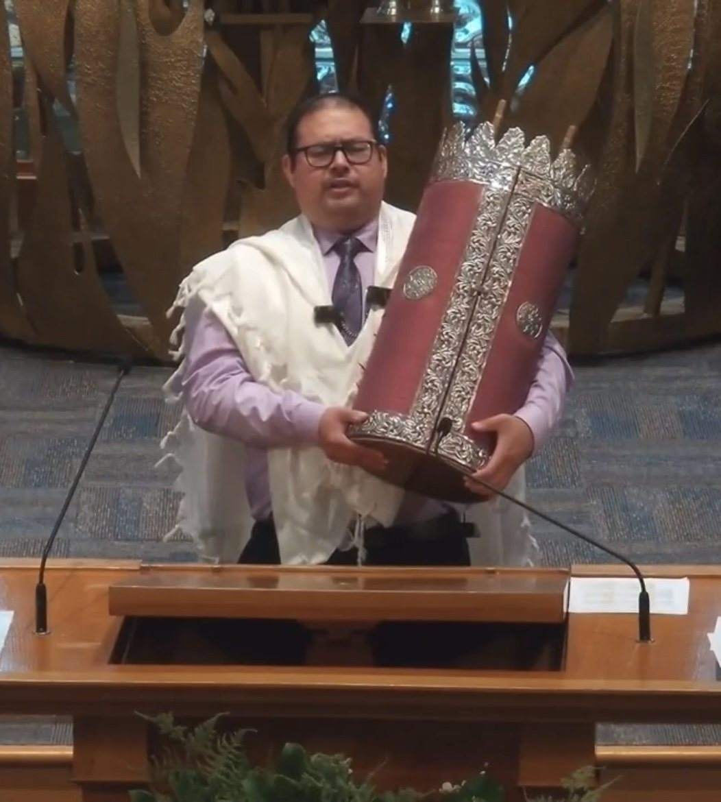

Biography
About Arturo “Art” Tapia-Minchez

Arturo “Art” Tapia-Minchez was born and raised in Southern California. As a child, Art had an affinity for all things creative, but especially for music. Growing up, he played in band and orchestra and, during his senior year of high school, joined choir.
Art dreamed of becoming a professional musician and composer, studying music at Riverside City College and later at The University of Redlands. Alongside his music making, Art discovered a love for writing. What began as journal entries gradually became standalone poetic works.
During the summer of 2022, Art began writing his first poetry manuscript. While working as a driving instructor in Los Angeles, he compiled poems in a notebook he carried with him. That creative thread continues in his published poetry and his ongoing artistic work.
Art currently resides in Glassboro, New Jersey. He sings in various choral ensembles in South Jersey and Pennsylvania, composes new music, and is an active member of his local synagogue while working toward converting to Reform Judaism. He continues to create through multiple artistic outlets, sharing his voice both vocally and compositionally.